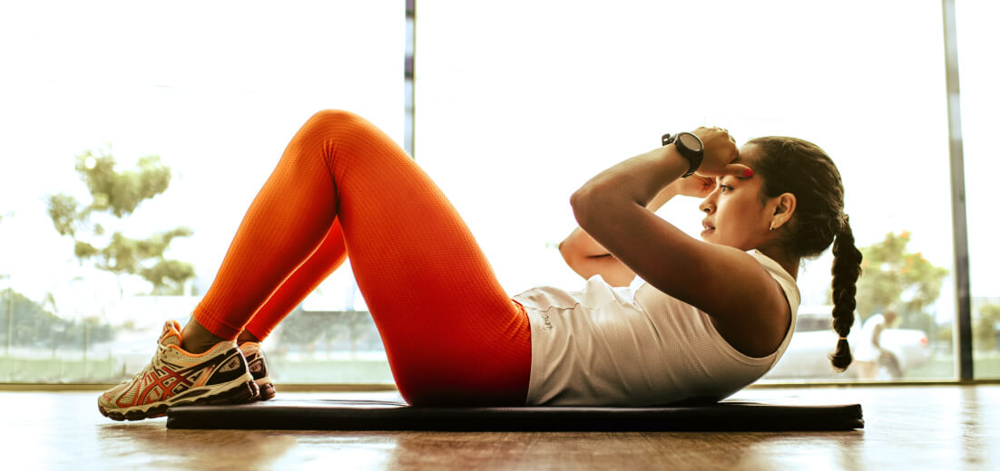

Детальная страница статьи с длинным названием

Воркаутеры тренируются с весом собственного тела, не используя силового оборудования. Но означает ли это, что они не могут набрать мышечную массы? Нет, не означает. Чтобы стать обладателем красивого мышечного рельефа, не обязательно ходить в зал и таскать железо. Можно обратиться к силовому воркауту и работать над мышцами при помощи турников, брусьев, шведской стенки и другого оборудования, которое есть на уличных спортивных площадках. Чтобы добиться результата, нужно грамотно распределять нагрузку между мышечными группами, подобрать оптимальное количество повторов и подходов.
Формула роста мышц едина для любого вида спорта: правильные тренировки, достаточное питание, отдых до полного восстановления. Как правило, воркаутеры занимаются без тренера, поэтому несут личную ответственность по каждому из пунктов.
Питание для роста мышц
Для набора мышц организм должен получать больше калорий, чем тратит. Главный источник энергии для тела и мышечной системы в частности — это углеводы. Их можно получить из круп, фруктов и овощей. Углеводы нужно употреблять до тренировки, чтобы получить достаточное количество сил. Также мышцам необходим белок, в организме он распадается до аминокислот, которые становятся строительным материалом для мышечной ткани. Белок должен поступать после тренировки, когда поврежденные мышцы нуждаются в восстановление. Не помешает есть что-то белковое на ночь, так как мышцы растут во время отдыха и сна. Получить белок можно из рыбы и мяса, молочных продуктов и яиц.
Тренировки
Занятия должны быть регулярными, то есть проходить с определенной последовательностью, желательно в одно и то же время. Выбор программы зависит от особенностей конкретного атлета, но есть единое для всех правило: разные мышцы нагружают в разные дни. К примеру, в понедельник работаем над руками, в среду — над спиной, в пятницу — над ногами и так далее.
Если позволяет физическая форма, то заниматься можно каждый день, но период отдыха для каждой мышечной группы должен составлять не менее трех дней.
В воркауте есть и другой подход, в нем упор делается на базовые жимы для разных мышечных групп. Если выбирать такую стратегию, то тренировка будет длиться дольше, зато после нее можно будет отдыхать по два дня.
Восстановление
Большинству людей не стоит нагружать себя каждый день, даже если это тренировки на разные группы мышц. Формирование мышечной массы происходит не на тренировке, а во время отдыха после нее. Самая важная часть отдыха — это сон. Если хочется нарастить мышцы, то необходимо ложиться спать каждый день в одно и то же время. Продолжительность сна по ночам — не менее восьми часов.
Для ускорения восстановления можно прибегать к упражнениям на растяжку. Они делают мышечную ткань более эластичной. К тому же растяжка успокаивает нервную систему и снижает выраженность послетренировочных болей.
Нужен ли вес?
В первые месяцы вполне достаточно нагрузки от веса собственного тела. В этот период не стоит ждать заметных результатов. Спустя несколько месяцев нагрузки от своего веса будет недостаточно. Потребуется дополнительный вес для достижения нужного уровня нагрузки, но воркаутеры не используют штанги и гантели, они решают вопрос по-другому.
Для решения данной задачи предусмотрено два пути:
- использование отягощения, которое можно надеть на себя. Это разные виды утяжелителей: манжеты, жилеты, пояса;
- увеличение нагрузки за счет утяжеления самого упражнения.
В последнем случае поможет калистеника. Данное направление предполагает разные способы нагрузки одной мышечной группы и увеличение периода под нагрузкой.
Смотрите также:

Обзор от Sport Olimp лучших беговых дорожек
Мы никогда не скрываем свою любовь к беговым дорожкам. Поэтому с большим энтузиазмом каждый год собираем для вас ТОП-10 самых лучших дорожек для дома

Обзор от Sport Olimp лучших беговых дорожек
Мы никогда не скрываем свою любовь к беговым дорожкам. Поэтому с большим энтузиазмом каждый год собираем для вас ТОП-10 самых лучших дорожек для дома

Обзор от Sport Olimp лучших беговых дорожек
Мы никогда не скрываем свою любовь к беговым дорожкам. Поэтому с большим энтузиазмом каждый год собираем для вас ТОП-10 самых лучших дорожек для дома

Обзор от Sport Olimp лучших беговых дорожек
Мы никогда не скрываем свою любовь к беговым дорожкам. Поэтому с большим энтузиазмом каждый год собираем для вас ТОП-10 самых лучших дорожек для дома